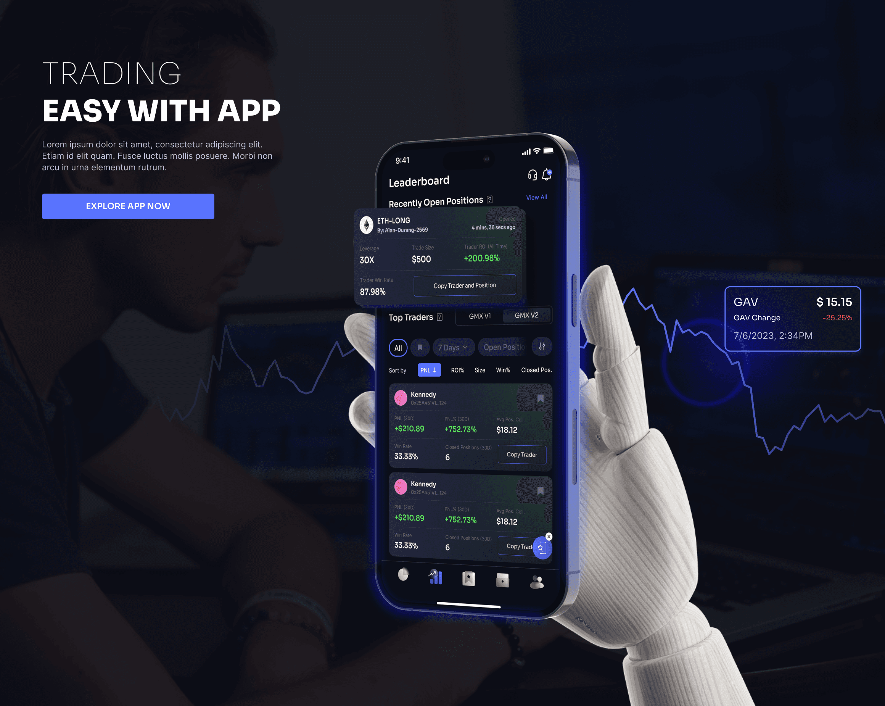
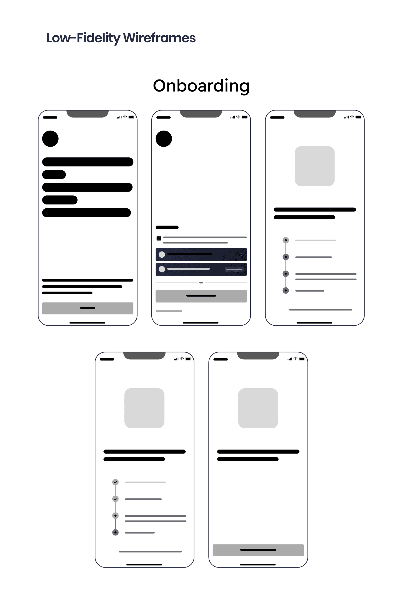
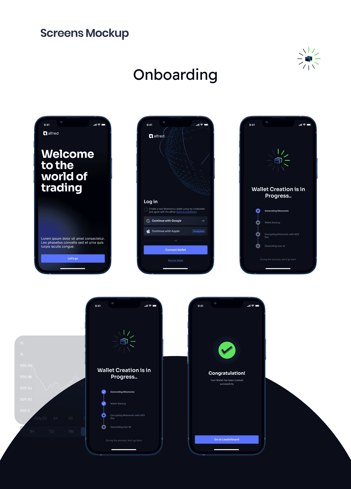
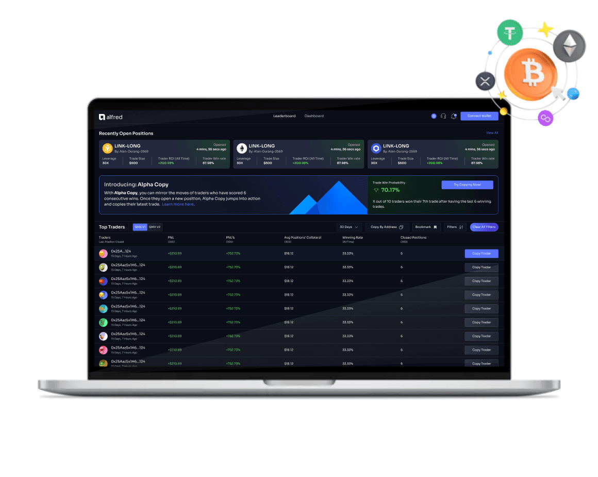
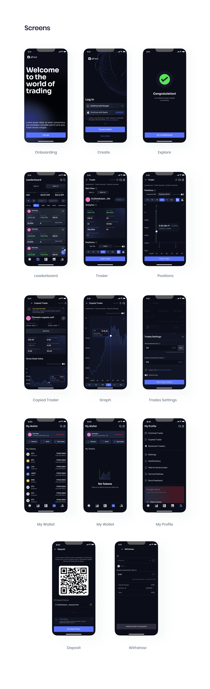

Alfred Copy Trading App
A decentralized investment app that lets people follow traders and copy their trades with a single click. The redesign focuses on clearer navigation, a smoother introduction to the product, and a more personal experience.

The challenge
A cluttered interface made the app difficult to navigate and essential features hard to find. Friction in onboarding affected new-user adoption, while limited personalization and customization made the experience less engaging.
The design direction
The redesign centered on a clean, clutter-free interface. The aim was to make core features easier to discover and access, while giving the overall investment experience a more consistent structure.
A clearer starting point
An improved onboarding process was a key part of the redesign. The published Results text reports a 35% increase in new-user adoption following these changes.
A more personal experience
Personalization and customization options were introduced to make the app more engaging and user-friendly. The Results text reports a 25% increase in retention, while the page’s headline metric displays 55%; both are retained with their original context below.
The result
The published outcome describes clearer navigation, easier access to essential features, improved onboarding, and a more personalized experience. The headline metrics and their source context are presented below, alongside the design process and visual work.
Making the experience clearer.
Making the impact visible.
Figures reported in the original case study ↗.
These are the headline figures shown in the original case study. Its Results text separately reports a 35% increase in new-user adoption and a 25% increase in retention. The source gives different retention values and does not explain the measurement periods; the figures are presented as reported, not as a reconciled dataset.
From understanding
to a considered experience.
The published process describes user interviews, surveys, and in-app analytics to understand pain points and user needs. Competitor apps and industry trends provided additional context, followed by information architecture, wireframing, prototypes, usability testing, and a visual style guide.
- 01
Research & Analysis
- 02
Information Architecture
- 03
Wireframing & Prototyping
- 04
Usability Testing
- 05
Visual Design & Style Guide
Inside the work
Original case study ↗




Want to talk through the work?
I’m happy to share more about my process and contribution.
Let’s talk ↗